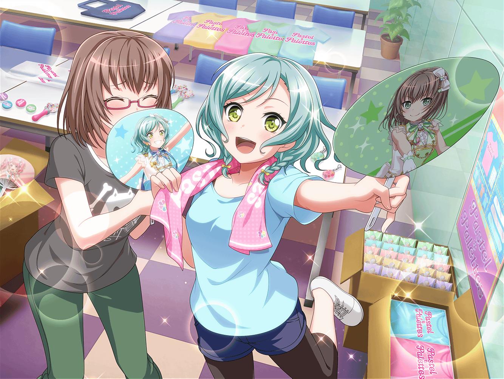

芸能事務所 会議室
日菜
あ、２人ともおかえり～
日菜
……あれ？
千聖ちゃんはどうしたの？
麻弥
千聖さんはスタッフさんとお話があるみたいです
彩
うん、でもすぐに終わるって言ってたよ
イヴ
そうなんですね。
それなら、チサトさんが戻るまで、これを一緒に見ませんか？
麻弥
これは……ファンの皆さんのSNSのやりとりですね？
日菜
うん、ファンの人達が新しくコールを考えてるみたいだから、
ちょっと様子を見てたんだ〜
彩
この間までギスギスしてたけど、
仲良く話してるみたいでよかった〜
イヴ
はい！
皆さん、とても和気あいあいと話しあっています！
日菜
それにしても……
コールの言葉とか、みんなよく思いつくよね～
麻弥
確かに、考えるのは大変そうですね。
その人に合ったものを考えないといけませんし
日菜
……あ！
そうだ、いいこと思いついた！
イヴ
どうしたんですか、ヒナさん？
日菜
あたし達も、自分のコール考えてみない！？
彩
えっ、そういうのって
ファンの人達が考えてくれるものだと思うけど……
日菜
いいじゃんいいじゃん！
絶対面白いから、考えてみようよ～！
日菜
じゃあまずはあたしね！
うーんと……そうだ！
日菜
『るんるんるるるーん、日菜ちゃん！』って
いうのはどうかな！？
麻弥
ふはは……日菜さんらしいですけど、
ちょっとふわっとしすぎかもしれませんね
日菜
うーん、なかなか難しいかも！
でも、楽しい～！
イヴ
私も思いつきました！
『ブシブシブシドー、イヴちゃん！』
どうですか！？
日菜
イヴちゃんらしいね！
いいじゃ〜ん！
日菜
よーし、じゃあ次は彩ちゃんね！
どうぞ！
彩
え、え～！？
急に言われても、思いつかないよ～！
日菜
もう彩ちゃんはしょうがないな～。
それじゃ、あたしが考えてあげる！
彩
え……何かすっごく不安なんだけど……
日菜
……よし！
『ズッコケコケコケ、彩ちゃん！』
これでどう！？
彩
ズッコケ！？
何で！？ もっとかわいいのがいいよ～！
日菜
彩ちゃんらしくっていいと思ったんだけどな～！
合ってなかった？
彩
うっ……合ってなかったか聞かれると、
否定しづらい……
日菜
う～ん、楽しくなってきた！
麻弥ちゃんのも、あたしが考えてい〜い！？
麻弥
い、いいですよ！
よろしくお願いします、日菜さん！
日菜
……じ～
麻弥
な、何だか緊張しますね……
日菜
……あ！
『フヘヘ、フヘヘヘ、麻弥ちゃん！』
麻弥
何かどんどん適当になってませんか！？
日菜
え～、そんなことないよ～！
日菜
うん、いいコールたくさん思いついたし、
早速ファンのみんなにも教えてあげなきゃ！
千聖
……日菜ちゃん？
何をしているのかしら？
日菜
え、千聖ちゃん？
何でそんなに怒ってるの！？
日菜
……あ、わかった！
千聖ちゃんのコール考えてないからでしょ！？
えーっとね……
千聖
違うわよ！
考えなくていいから！
千聖
ファンの人達がしていることに、
私達が立ち入っちゃダメって前に言ったでしょう！？
日菜
え～、そっち！？
千聖
そっちもこっちもないわよ、まったく……
ほら、もう練習時間だし、早く行きましょう？
日菜
えー、せっかく考えたのにな……
本当にダメ～？
千聖
絶対ダーメ！